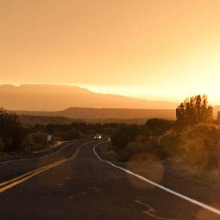
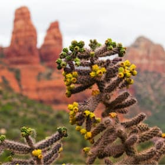
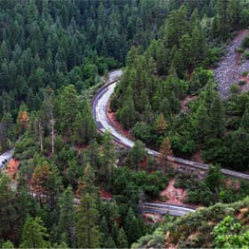

Фотографии с местностью Сендоны

Фото и видео
Не можете решиться на путешествие из-за курса? Фотографии помогут вам забыть о политике и экономике.
 Неродные просторы
 Местная растительность
 Дорога на север

Мост Дьявола
Все еще сомневаетесь?
Смотрите видеопрезентацию и скорее за билетами, пока они не подоражали в очередной раз!